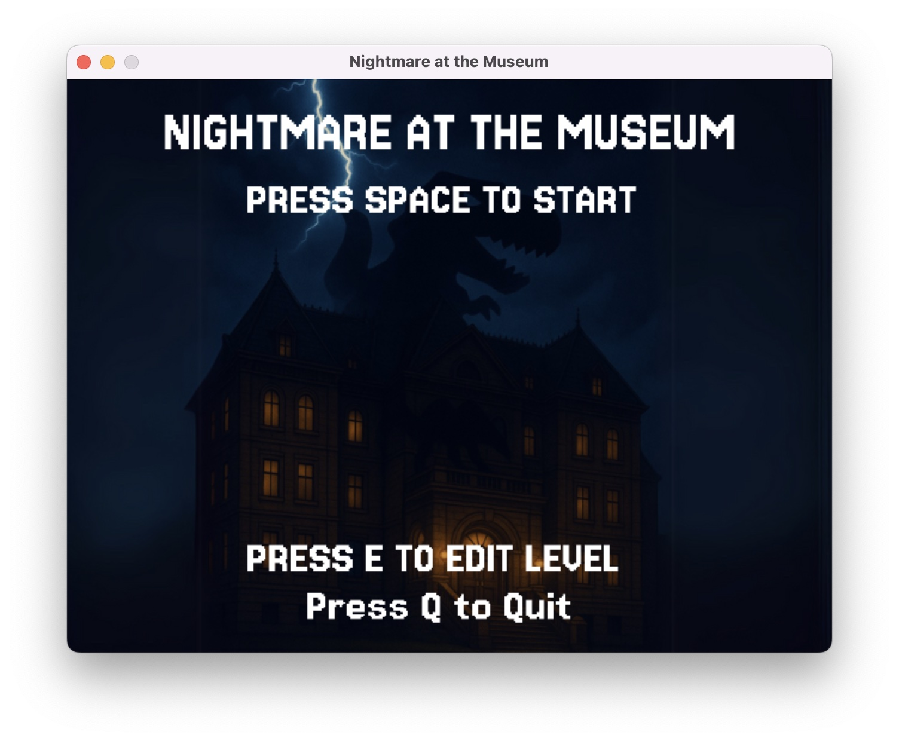
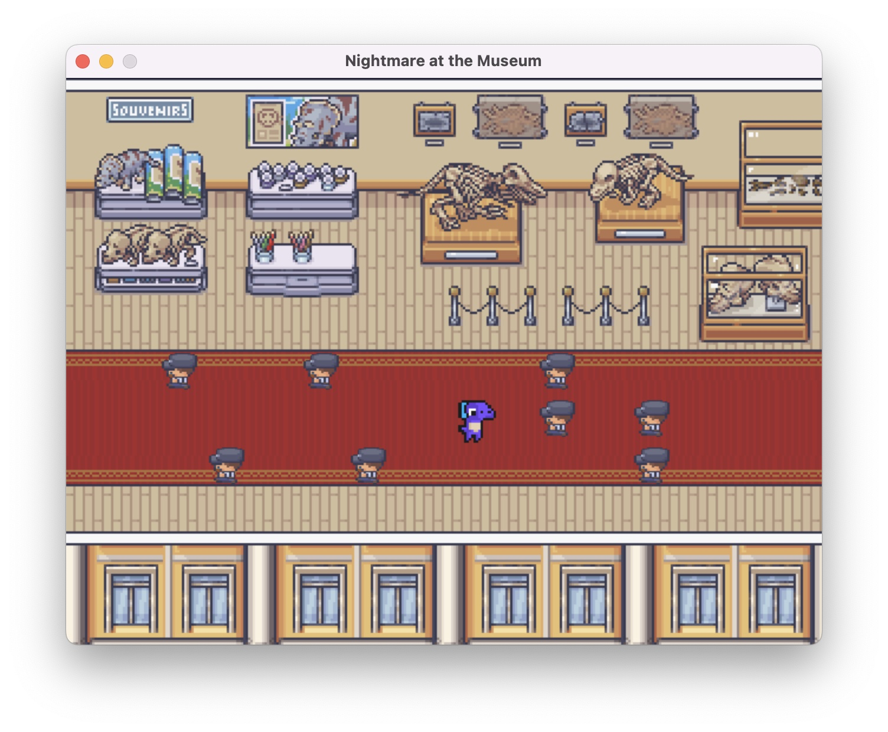
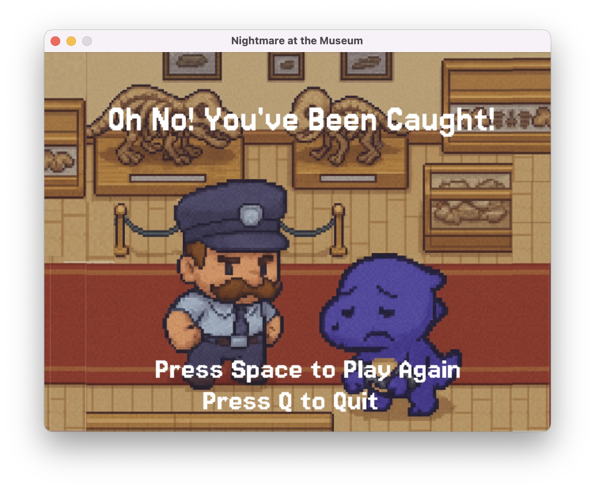
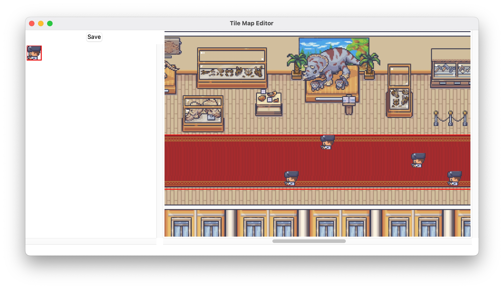
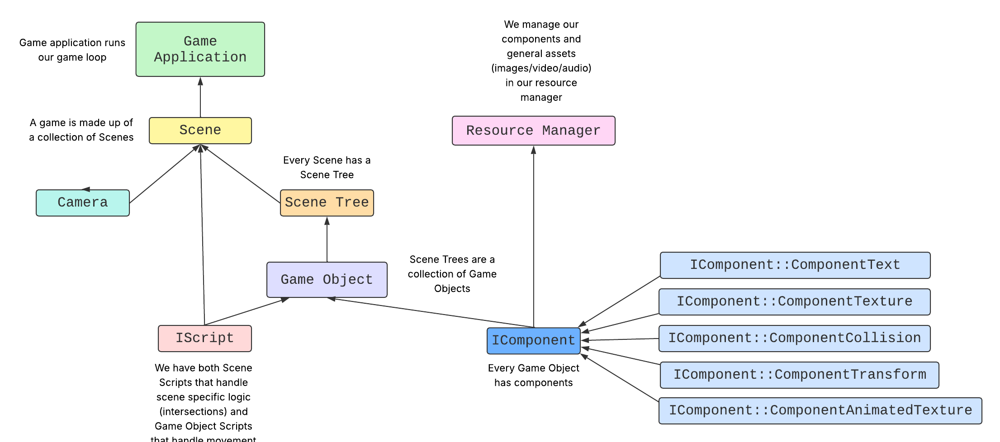

Welcome to the documentation site for the SESQuatch Game Engine and Game Application: Nightmare at the Museum!




This engine supports component-based architecture, scene graphs, scripting, and rendering with SDL2.

To run the SESQuatch Game Engine, view this GitHub Repository . Copy the repository, navigate to Engine and run 'dub'.
Note, make sure to have the dependencies outlined in dub.json installed.
Build Binary: https://github.com/Spring25BuildingGameEngines/finalproject-sesquatch/blob/main/Engine/prog_sdl
Overall, we really enjoyed working on this project! It was a rewarding and fun experience to bring together everything we’ve learned throughout the semester and use it to build a small game engine of our own. We’re proud of the final game we created, especially the structure of our engine, the functionality of our JSON parsing system, and the architectural choices, like components and scene trees, that made our codebase modular and extensible.
One of the biggest challenges we encountered was time management. Looking back, we wish we had started implementing core systems earlier so that we could spend more time refining our ideas. We had a lot of features we were excited about, and while we were able to implement many of them, we didn’t get to all of them. If we were to approach this project again, we would start planning and coding much sooner, allowing ourselves more time to polish our engine.
In particular, we wanted to add a more advanced tile editor to make level creation easier and more flexible. We also hoped to include additional levels to our game. Beyond that, we had aspirations to implement dynamic lighting for the guards, which would have helped enhance the nighttime atmosphere of our game. We also envisioned adding more animations—both to bring the characters to life and to create smoother transitions in cutscenes and interactions.
One thing that we are really proud of is the design of our game. Many thanks to LimeZu, who is the creator for most of the amazing visual assets that we used, and many hours were spent in GIMP to format and build custom, smaller spritesheets from LimeZu's library. The game win/lose/menu screens were produced with AI-assistance. Lastly, the cutscene is borrowed from one of our favorite arcade games, The Lost World: Jurassic Park from SEGA in 1997. Altogether, we feel that these assets were thoughtfully chosen, created, or otherwise assembled together to create a dynamic and exciting atmosphere for our game.
Some of the most technically challenging aspects of our project were the scene management system and the implementation of cutscenes, which we treated as the special feature of our game. Ensuring that scenes loaded correctly, transitioned smoothly, and interacted with the rest of the engine required a great deal of careful planning and debugging. In particular, a significant issue we were running into with our scenes and transitions was that when we originally started to load multiple scenes into the game and run them, some game behaviors that worked in individually loaded scenes stopped working. This issue was a big challenge for us to debug since we did not initially notice that the error was caused by loading in more scenes as opposed to other issues with the code and merge conflicts. In the future, we would be more diligent about thoroughly understanding the memory management of our engine to avoid or quickly catch issues caused by shared data used across several objects / engine components. Our JSON reader functions also took a significant amount of time to write and refine. Making them robust enough to integrate cleanly with our engine systems was a key part of our architecture.